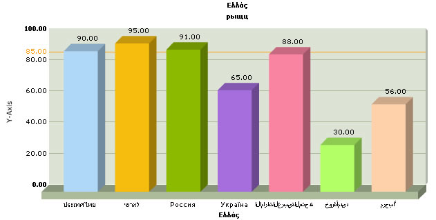
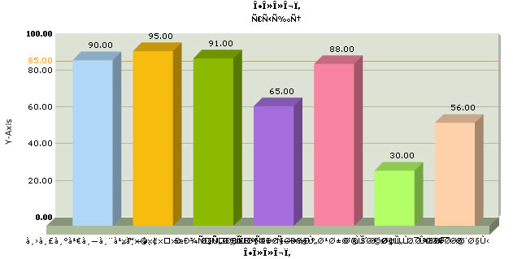

| Using Multi-lingual text in FusionCharts |
|
FusionCharts allows you to use multi-lingual (UTF-8) characters on the charts. Shown below is an example where we've used names using various languages on the chart: |
|  |
The XML for the above chart is : <graph rotatenames='0' xaxisname='Ελλάς' yaxisname='шаяьеду Y-Axis' caption='Ελλάς' subCaption='рыщц' numdivlines='4' lineThickness='3' pieborderColor='FFFFFF' pieFillAlpha='95' pieRadius='95'> |
| The XML is using texts in various languages (put in bold). To make the charts show these languages (and many other languages not included here) you have to store the file in UTF-8 Unicode Encoding Format with proper BOM mark. With out BOM mark the chart may somewhat look like the chart below : |
|  |
You can use multi-lingual characters in all the charts in FusionCharts suite. However, any rotated text on chart cannot show non-English characters. That is, if you want to use multi-lingual characters, you'll need to show horizontal x-axis labels without being rotated (using <graph rotateNames='0' ..>). FusionCharts supports only left-to-right languages as of now. It doesn't have native support for right-to-left languages like Hebrew. So, if you want to use Hebrew with FusionCharts, you'll have to programmatically change the text sequence and then provide the data to FusionCharts. |